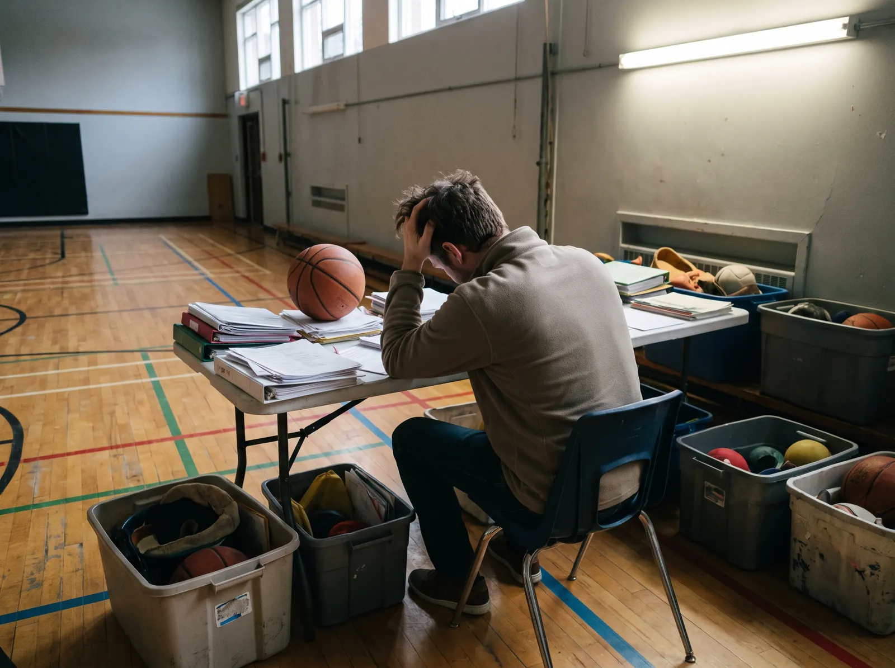
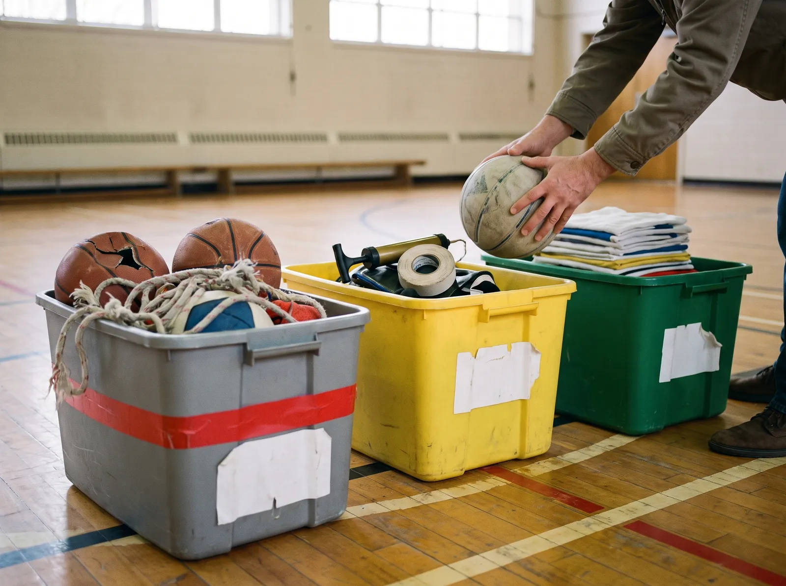
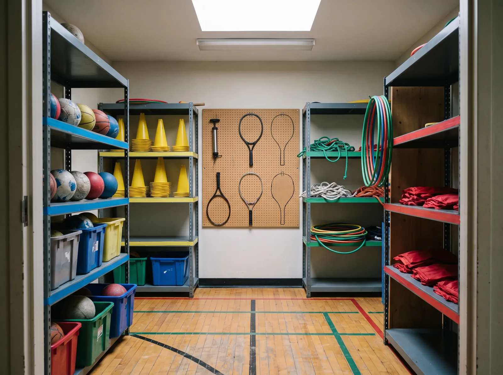
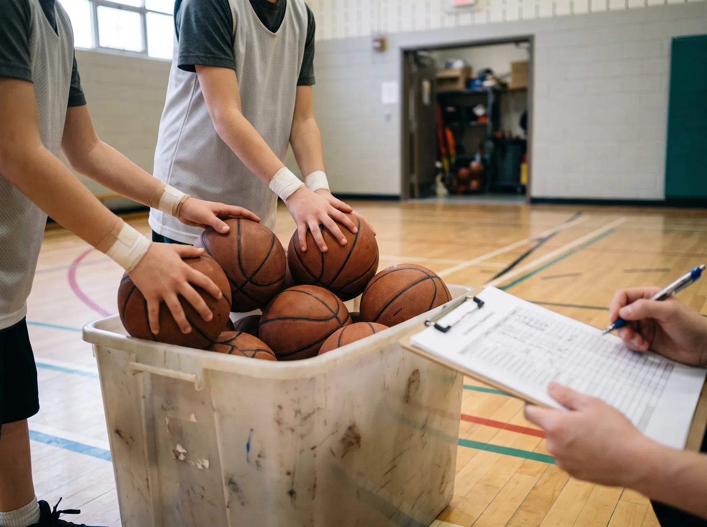
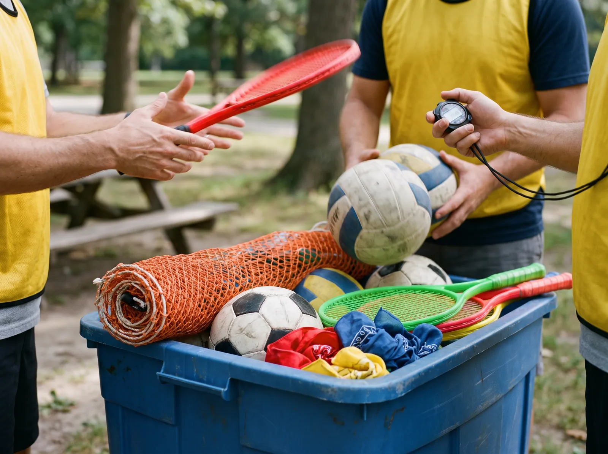
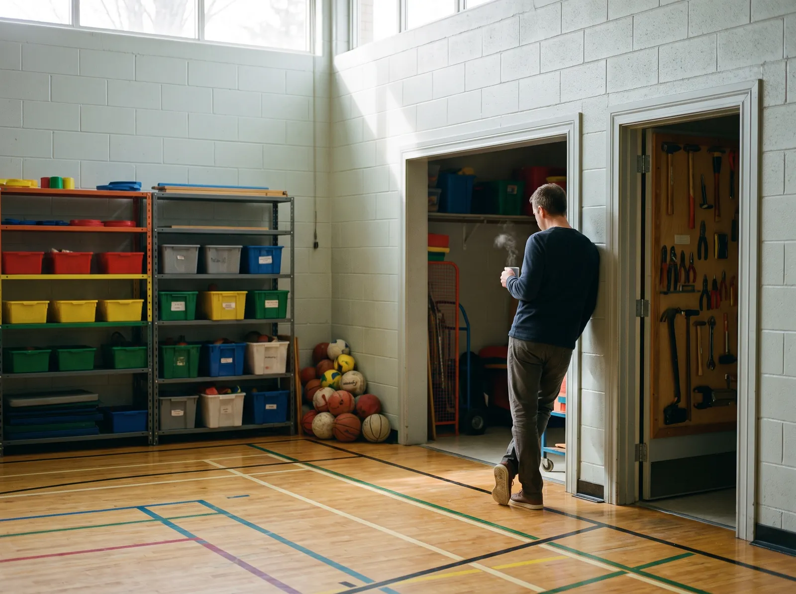

OrganisationOrganization组织管理Organización10 min de lecture10 min read10 分钟阅读10 min de lectura
Faire l'inventaire de ton matériel sans y perdre tes fins de semaineTake stock of your equipment without losing your weekends盘点器材，不再搭上周末Haz el inventario de tu material sin perder los fines de semana
JR
Joey Root
Publié le Published 发布于 Publicado el 23 août 2026
Vendredi, 16 h 30. Tu ouvres la porte du local de rangement et une avalanche te répond : ballons à moitié dégonflés, cerceaux entremêlés, dossards décolorés, trois raquettes de badminton sans cordage, et une boîte marquée « Divers » que personne n'a osé ouvrir depuis 2018.Friday, 4:30 p.m. You open the storage room door and an avalanche answers back: half-deflated balls, tangled hula hoops, faded pinnies, three badminton racquets with no strings, and a box labelled “Misc.” that nobody has dared open since 2018.星期五下午 4 点半。你推开器材室的门，迎面而来的是一场雪崩：半瘪的球、缠成一团的呼啦圈、褪色的分队背心、三支没有线的羽毛球拍，还有一个写着「杂项」的箱子——自 2018 年起没人敢打开。Viernes, 16 h 30. Abres la puerta del almacén y te responde una avalancha: pelotas medio desinfladas, aros enredados, petos descoloridos, tres raquetas de bádminton sin cordaje y una caja marcada «Varios» que nadie se ha atrevido a abrir desde 2018.
Puis le courriel tombe. Toujours le même, toujours au pire moment : « Merci de nous transmettre l'inventaire complet et à jour du matériel avant la fin de la semaine prochaine. »Then the email lands. Always the same one, always at the worst possible moment: “Please send us the complete, up-to-date equipment inventory by the end of next week.”然后邮件来了。永远是同一封，永远在最糟的时候：「请在下周之前提交一份完整且最新的器材清单。」Y entonces llega el correo. Siempre el mismo, siempre en el peor momento: «Por favor, envíanos el inventario completo y actualizado del material antes de que termine la próxima semana.»
Tu sais déjà ce que ça veut dire. Deux heures à genoux sur le béton à compter des cônes. Un chiffrier que tu vas maudire. Et la certitude tranquille que dans trois semaines, il sera déjà faux.You already know what that means. Two hours on your knees on the concrete counting cones. A spreadsheet you're going to curse. And the quiet certainty that three weeks from now it'll already be wrong.你已经知道这意味着什么。跪在水泥地上数两个小时的标志锥。一份让你咬牙切齿的表格。以及一个平静的事实：三周后它就已经不准了。Ya sabes lo que eso significa. Dos horas de rodillas sobre el cemento contando conos. Una hoja de cálculo que vas a maldecir. Y la certeza tranquila de que dentro de tres semanas ya estará desactualizada.
Que tu enseignes l'éducation physique, que tu diriges un service de garde ou que tu coordonnes un camp de jour, l'inventaire est la corvée la plus ingrate du métier. C'est aussi celle qui rapporte le plus quand tu la règles pour de bon — parce qu'un local mal géré ne coûte pas juste du temps : il coûte du mouvement.Whether you teach PE, run an after-school program or coordinate a day camp, inventory is the most thankless chore in the job. It's also the one that pays off the most once you fix it for good — because a badly managed storage room doesn't just cost time: it costs movement.无论你是体育教师、课后托管负责人，还是夏令营协调员，盘点都是这份工作里最吃力不讨好的杂务。它也是一旦彻底解决、回报最大的一件事——因为一个管理混乱的器材室浪费的不只是时间，而是孩子的运动量。Tanto si das clase de educación física, como si diriges un servicio de cuidado escolar o coordinas un campamento de día, el inventario es la tarea más ingrata del oficio. También es la que más rinde cuando la resuelves de verdad: porque un almacén mal gestionado no solo cuesta tiempo, cuesta movimiento.
En éducation physique, chaque minute perdue à chercher un ballon est une minute d'engagement moteur en moins.In PE, every minute spent hunting for a ball is a minute of active movement lost.在体育课上，每一分钟花在找球上，就少了一分钟的实际活动时间。En educación física, cada minuto perdido buscando una pelota es un minuto menos de tiempo activo.
En service de garde, un bac vide au mauvais moment, c'est une chicane qui commence.In an after-school program, an empty bin at the wrong moment is an argument waiting to start.在课后托管，关键时刻少一箱器材，就意味着一场争执的开始。En el servicio de cuidado escolar, una caja vacía en el momento equivocado es una pelea a punto de empezar.
En camp de jour, dix minutes à fouiller un local, c'est dix minutes de trente jeunes qui attendent debout au soleil.At day camp, ten minutes digging through a storage room is ten minutes of thirty kids standing around in the sun.在夏令营，翻找器材室的十分钟，就是三十个孩子在太阳底下干等的十分钟。En el campamento de día, diez minutos revolviendo el almacén son diez minutos de treinta chicos esperando de pie bajo el sol.
Bonne nouvelle : compter n'a jamais été le problème. C'est quand et comment tu comptes qui t'épuise. Voici la méthode qui prend cinq minutes par semaine et qui ne te redemandera plus jamais un samedi.Good news: counting was never the problem. It's when and how you count that wears you down. Here's the method that takes five minutes a week and will never ask for another Saturday.好消息是：清点本身从来不是问题。真正消耗你的，是你什么时候清点、怎么清点。下面这套方法每周只要五分钟，而且再也不会占用你的周末。Buena noticia: contar nunca fue el problema. Lo que te agota es cuándo y cómo cuentas. Esta es la metodología que ocupa cinco minutos por semana y no te volverá a pedir un sábado.
Vendredi, 16 h 30. Le moment où le local décide de te répondre.Friday, 4:30 p.m. The moment the storage room decides to answer back.星期五下午 4 点半。器材室决定开口回应你的那一刻。Viernes, 16 h 30. El momento en que el almacén decide responderte.
Pourquoi l'inventaire classique t'épuiseWhy the classic inventory wears you down传统盘点为什么让你精疲力尽Por qué el inventario clásico te agota
Pour régler un problème, il faut nommer sa cause. Si l'inventaire est une friction permanente dans les milieux scolaires et récréatifs, ce n'est pas parce que tu manques de rigueur. C'est parce que la méthode traditionnelle repose sur des postulats dépassés — et qu'elle s'enroule sur elle-même.To fix a problem you have to name its cause. If inventory is a permanent source of friction in school and recreation settings, it isn't because you lack discipline. It's because the traditional method rests on outdated assumptions — and it feeds on itself.要解决问题，先得说清它的成因。如果盘点在学校和康乐场景里长期是个摩擦点，原因不是你不够严谨，而是传统方法建立在过时的假设上——而且它会自己滚雪球。Para resolver un problema hay que nombrar su causa. Si el inventario es una fricción permanente en los entornos escolares y recreativos, no es porque te falte rigor. Es porque el método tradicional se apoya en supuestos caducos, y se retroalimenta.
Le cercle vicieux de l'inventaireThe inventory doom loop盘点的恶性循环El círculo vicioso del inventario
1Inventaire manuel, une fois par annéeManual inventory, once a year一年一次的人工盘点Inventario manual, una vez al añoUne demi-journée bloquée, un chiffrier de deux cents lignes, un dos en compote.Half a day blocked off, a two-hundred-row spreadsheet, and a wrecked back.占掉半天时间，一张两百行的表格，还有一个快散架的腰。Media jornada bloqueada, una hoja de doscientas filas y una espalda destrozada.
2Découragement, puis abandonDiscouragement, then abandonment先是气馁，然后放弃Desánimo y luego abandonoTrois semaines plus tard, plus personne ne met le fichier à jour. Il devient décoratif.Three weeks later nobody updates the file any more. It becomes decorative.三周之后，没有人再更新这个文件。它变成了摆设。Tres semanas después ya nadie actualiza el archivo. Pasa a ser decorativo.
3Perte de contrôle visuelLoss of visual control失去一目了然的掌控Pérdida del control visualTu ne sais plus ce que tu as. Tu planifies à l'aveugle et tu improvises le matin même.You no longer know what you own. You plan blind and improvise the morning of.你不再清楚自己有什么。只能盲目备课，当天早上临时凑合。Ya no sabes lo que tienes. Planificas a ciegas e improvisas la misma mañana.
4Pertes, bris et achats en doubleLosses, breakage and duplicate purchases丢失、损坏和重复采购Pérdidas, roturas y compras duplicadasLe budget part dans du matériel que tu possédais déjà. Et l'inventaire de l'an prochain sera encore plus long.Budget goes into equipment you already owned. And next year's inventory will be even longer.预算花在了你本来就有的器材上。而明年的盘点会更漫长。El presupuesto se va en material que ya tenías. Y el inventario del año que viene será aún más largo.
↻ Et on recommence. Chaque tour de roue rend le suivant plus lourd.↻ And around it goes. Every lap makes the next one heavier.↻ 然后周而复始。每转一圈，下一圈就更沉重。↻ Y vuelta a empezar. Cada vuelta hace la siguiente más pesada.

Recompter à la main chaque année : c'est ce cycle-là qu'il faut casser, pas toi.Counting it all by hand year after year: that's the cycle to break, not yourself.年复一年用手清点：该被打破的是这个循环，不是你。Volver a contarlo todo a mano cada año: ese es el ciclo que hay que romper, no tú.
Le piège du chiffrier statiqueThe static spreadsheet trap静态表格的陷阱La trampa de la hoja de cálculo estática
La plupart des établissements travaillent encore avec une feuille de calcul transmise d'année en année, ou un cahier d'inventaire papier. Le problème n'est pas l'outil : c'est qu'il est mort à la seconde où tu l'enregistres. Si un ballon de Kin-Ball pète le mardi après-midi et qu'un éducateur le jette sans passer par l'ordinateur du bureau, ton fichier ment.Most sites still run on a spreadsheet handed down year after year, or a paper inventory book. The tool isn't the problem: the problem is that it dies the second you save it. If a Kin-Ball bursts on Tuesday afternoon and a staff member tosses it without going to the office computer, your file is lying to you.大多数机构仍然靠一份年复一年传下来的表格，或者一本纸质盘点簿。问题不在工具，而在于它一保存就已经过时。如果周二下午一个 Kin-Ball 球爆了，工作人员顺手扔掉、没有回办公室的电脑上登记，你的文件就在骗你。La mayoría de los centros siguen funcionando con una hoja de cálculo heredada año tras año, o un cuaderno de inventario en papel. El problema no es la herramienta: es que muere en el instante en que la guardas. Si un balón de Kin-Ball revienta el martes por la tarde y un educador lo tira sin pasar por el ordenador de la oficina, tu archivo miente.
Un chiffrier, c'est une photo. Ton local, c'est un film.A spreadsheet is a photograph. Your storage room is a movie.表格是一张照片。你的器材室是一部电影。Una hoja de cálculo es una foto. Tu almacén es una película.
La conséquence arrive toujours au même endroit : tu recommandes du matériel que tu possèdes déjà, ou tu montes une activité de groupe pour découvrir le matin même qu'il manque la moitié des ballons requis.The consequence always shows up in the same place: you reorder equipment you already own, or you build a whole-group activity only to discover that morning that half the required balls are missing.后果总是出现在同一个地方：你重新采购了本来就有的器材，或者精心设计了一个集体活动，却在当天早上发现所需的球少了一半。La consecuencia aparece siempre en el mismo sitio: vuelves a pedir material que ya tienes, o montas una actividad de grupo para descubrir esa misma mañana que falta la mitad de los balones necesarios.
Le syndrome du bien communThe commons syndrome「公共物品」综合症El síndrome del bien común
Quand tout le monde a la clé, personne ne se sent individuellement responsable. Le matériel déplacé ne revient pas à sa place, les équipements brisés sont remis dans les bacs sans avertissement, et le local devient une jungle où chaque équipe accuse la précédente.When everyone has a key, nobody feels individually responsible. Moved equipment never comes back to its spot, broken gear gets dropped back into the bins with no warning, and the room turns into a jungle where each team blames the one before.当所有人都有钥匙时，没有人觉得自己该负责。被挪走的器材回不到原位，坏掉的东西被默默塞回收纳箱，器材室变成一片丛林，每支队伍都在指责上一支。Cuando todo el mundo tiene llave, nadie se siente responsable a título individual. El material desplazado no vuelve a su sitio, los equipos rotos se devuelven a las cajas sin avisar, y el almacén se convierte en una jungla donde cada equipo culpa al anterior.
Le matériel ne disparaît pas. Il change juste de responsable — et le dernier responsable, c'est toujours toi.Equipment doesn't disappear. It just changes hands — and the last pair of hands is always yours.器材不会凭空消失。它只是换了负责人——而最后那个负责人，永远是你。El material no desaparece. Solo cambia de responsable, y el último responsable siempre eres tú.
Trois métiers, trois points de frictionThree jobs, three friction points三种岗位，三个摩擦点Tres oficios, tres puntos de fricción
En éducation physique : le temps entre deux groupesIn PE: the gap between two groups体育课：两个班之间的空隙En educación física: el tiempo entre dos grupos
Des rotations de classes serrées — souvent 5 à 10 minutes entre deux groupes.Tight class rotations — often 5 to 10 minutes between two groups.班级轮换非常紧凑——两个班之间常常只有 5 到 10 分钟。Rotaciones de clase muy ajustadas: a menudo de 5 a 10 minutos entre dos grupos.
Un changement d'unité (badminton, gymnastique, tchoukball) qui exige de tout réorganiser.A unit change (badminton, gymnastics, tchoukball) that means reorganizing everything.换单元（羽毛球、体操、旋网球）意味着一切重新排布。Un cambio de unidad (bádminton, gimnasia, tchoukball) que obliga a reorganizarlo todo.
Des centaines d'élèves qui manipulent le même matériel chaque jour.Hundreds of students handling the same equipment every day.每天有几百名学生接触同一批器材。Cientos de alumnos manipulando el mismo material cada día.
Point de friction :Friction point:摩擦点：Punto de fricción:il n'existe aucun moment dans ta journée pour noter un bris. Alors tu ne le notes pas.there is no moment in your day to record a breakage. So you don't record it.你的一天里根本没有一个空档去登记损坏。于是你就不登记了。no existe ningún momento de tu jornada para anotar una rotura. Así que no la anotas.
En service de garde : le matériel qui sortIn after-school programs: the gear that leaves课后托管：会「出门」的器材En el cuidado escolar: el material que sale
Une équipe à temps partiel, avec des étudiants et des remplaçants fréquents.A part-time team, with students and frequent substitutes.一支兼职团队，成员包括学生和频繁更换的代班人员。Un equipo a tiempo parcial, con estudiantes y sustitutos frecuentes.
Du matériel qui part dans la cour, au parc voisin, dans les corridors, dans les classes.Equipment that goes out to the yard, the nearby park, the hallways, the classrooms.器材会被带到操场、旁边的公园、走廊和教室。Material que se va al patio, al parque de al lado, a los pasillos, a las aulas.
Une usure quotidienne intense, récréation après récréation.Intense daily wear, recess after recess.日复一日的高强度磨损，一次课间接着一次课间。Un desgaste diario intenso, recreo tras recreo.
Point de friction :Friction point:摩擦点：Punto de fricción:le ballon oublié sur la cour n'appartient à personne — donc personne ne va le chercher.the ball left out in the yard belongs to nobody — so nobody goes to get it.落在操场上的球不属于任何人——所以没有人会去捡。el balón olvidado en el patio no es de nadie, así que nadie va a buscarlo.
En camp de jour : la saison qui compresse toutAt day camp: the season that compresses everything夏令营：把一切压缩的短暂季节En el campamento de día: la temporada que lo comprime todo
Des sites complets montés et démontés en quelques semaines.Entire sites set up and taken down in a matter of weeks.整个营地在几周内搭起来又拆掉。Sedes completas montadas y desmontadas en pocas semanas.
Des moniteurs souvent adolescents, peu formés aux processus administratifs.Counsellors who are often teenagers, with little training in admin processes.辅导员往往是青少年，几乎没受过行政流程训练。Monitores a menudo adolescentes, poco formados en procesos administrativos.
Du matériel qui circule entre le plateau sportif, la piscine, le parc et les locaux.Equipment circulating between the sports field, the pool, the park and the indoor rooms.器材在运动场、泳池、公园和室内场地之间来回流转。Material que circula entre la pista deportiva, la piscina, el parque y los locales.
Point de friction :Friction point:摩擦点：Punto de fricción:tout se règle en août, d'un seul coup, quand la moitié de l'équipe est déjà repartie à l'école.everything gets settled in August, all at once, when half the team has already gone back to school.一切都堆到八月一次性解决，而那时一半的团队已经回学校了。todo se resuelve en agosto, de golpe, cuando la mitad del equipo ya ha vuelto a clase.
Pour enlever l'essentiel de la charge mentale, il faut changer de mode : passer du réactif — tout compter d'un coup, à la fin — au continu. Quatre piliers, dans cet ordre. Ne saute pas le premier : les trois autres ne tiennent pas sans lui.To lift most of the mental load you have to switch modes: from reactive — counting everything at once, at the end — to continuous. Four pillars, in this order. Don't skip the first one: the other three don't hold without it.要卸下大部分心理负担，就必须换一种模式：从被动式——年底一次性清点全部——转为持续式。四大支柱，按顺序来。别跳过第一个：没有它，后面三个都立不住。Para quitarte la mayor parte de la carga mental hay que cambiar de modo: pasar de lo reactivo —contarlo todo de golpe, al final— a lo continuo. Cuatro pilares, en este orden. No te saltes el primero: los otros tres no se sostienen sin él.
Pilier 1 — Le tri radicalPillar 1 — The radical purge支柱一 —— 彻底清理Pilar 1 — La criba radical
On ne gère pas du désordre : on le déplace. Avant de numériser ou de compter quoi que ce soit, sors tout du local, une bonne fois.You don't manage clutter: you just move it around. Before digitizing or counting anything, take everything out of the room, once and for all.混乱是管不了的，只能被挪来挪去。在数字化或清点任何东西之前，先把器材室里的所有东西搬出来，一次做彻底。El desorden no se gestiona: se cambia de sitio. Antes de digitalizar o contar nada, saca todo del almacén, de una vez por todas.
Jeté / réparé / donné. Chaque objet tombe dans une des trois piles. Il n'y a pas de quatrième pile « on verra ».Trash / repair / donate. Every item lands in one of three piles. There is no fourth “we'll see” pile.扔掉 / 修理 / 捐出。每件东西都归入三堆之一。没有第四堆「再说吧」。Tirar / reparar / donar. Cada objeto cae en uno de los tres montones. No existe un cuarto montón de «ya veremos».
Le test des 12 mois. Si un équipement n'a pas servi depuis un an et qu'il n'appartient à aucun programme obligatoire, il quitte le local.The 12-month test. If a piece of gear hasn't been used in a year and isn't part of any required program, it leaves the room.12 个月测试。如果某件器材一年没用过，又不属于任何必修项目，它就该离开器材室。La prueba de los 12 meses. Si un equipo no se ha usado en un año y no forma parte de ningún programa obligatorio, sale del almacén.
La zone quarantaine. Un bac ultra-visible « À RÉPARER OU À ÉVALUER ». Le matériel douteux y va immédiatement, au lieu de retourner se cacher parmi le fonctionnel.The quarantine zone. One highly visible bin: “TO REPAIR OR ASSESS.” Questionable gear goes straight in, instead of hiding back among the working stuff.隔离区。一个极其醒目的收纳箱：「待修 / 待评估」。可疑的器材立刻放进去，而不是混回能用的那一堆里。La zona de cuarentena. Una caja ultravisible: «PARA REPARAR O EVALUAR». El material dudoso va ahí de inmediato, en vez de volver a esconderse entre lo que funciona.
Photographie le local avant de commencer. C'est le seul argument dont tu auras besoin le jour où quelqu'un demandera pourquoi tu as passé trois heures là-dedans.Photograph the room before you start. It's the only argument you'll need the day someone asks why you spent three hours in there.动手之前先给器材室拍张照。等有人问你为什么在里面待了三小时，这就是你唯一需要的证据。Fotografía el almacén antes de empezar. Es el único argumento que necesitarás el día que alguien pregunte por qué pasaste tres horas ahí dentro.

Trois piles, pas quatre. La pile « on verra » est la raison pour laquelle ton local déborde.Three piles, not four. The “we'll see” pile is exactly why your room is overflowing.三堆，不是四堆。「再说吧」那一堆，正是器材室爆满的原因。Tres montones, no cuatro. El montón de «ya veremos» es justo la razón por la que tu almacén desborda.
Pilier 2 — Le zonage et le codage visuelPillar 2 — Zoning and visual coding支柱二 —— 分区与视觉编码Pilar 2 — Zonificación y código visual
Un inventaire rapide, c'est un inventaire qui se fait avec les yeux. Si tu dois ouvrir un bac pour savoir ce qu'il contient, tu as déjà perdu la partie.A fast inventory is an inventory you do with your eyes. If you have to open a bin to know what's inside, you've already lost.快速盘点，是用眼睛完成的盘点。如果你得打开箱子才知道里面有什么，你已经输了。Un inventario rápido es un inventario que se hace con los ojos. Si tienes que abrir una caja para saber qué contiene, ya has perdido.
Une couleur par secteur. Rouge pour l'ÉPS, bleu pour le service de garde, vert pour le matériel commun ou le camp. Un ruban de couleur sur le bac suffit.One colour per sector. Red for PE, blue for the after-school program, green for shared or camp gear. A strip of coloured tape on the bin is enough.每个部门一种颜色。体育课用红色，课后托管用蓝色，公用或夏令营器材用绿色。箱子上贴一条彩色胶带就够了。Un color por sector. Rojo para EF, azul para el cuidado escolar, verde para el material común o del campamento. Basta con una cinta de color en la caja.
Le nom ET la quantité de référence. Pas « ballons mousse », mais « Bac 3 — 20 ballons mousse rouges ». Sans quantité cible, il n'y a rien à vérifier.The name AND the reference count. Not “foam balls” but “Bin 3 — 20 red foam balls.” With no target number there is nothing to check against.写名称，也要写基准数量。不是「泡沫球」，而是「3 号箱 —— 20 个红色泡沫球」。没有基准数量，就没什么可核对的。El nombre Y la cantidad de referencia. No «pelotas de espuma», sino «Caja 3 — 20 pelotas de espuma rojas». Sin cantidad objetivo no hay nada que verificar.
Les silhouettes au mur. Une forme peinte ou découpée derrière chaque objet suspendu : un manque se voit de la porte, sans compter.Shadow boards. A painted or cut-out silhouette behind each hanging item: a gap is visible from the doorway, with no counting at all.影子板。在每件挂起的器材背后画上或剪出轮廓：站在门口就能看出缺了什么，根本不用数。Siluetas en la pared. Una forma pintada o recortada detrás de cada objeto colgado: una ausencia se ve desde la puerta, sin contar nada.
Des emplacements fixes. Chaque objet a une adresse, et une seule.Fixed locations. Every item has one address, and only one.固定位置。每件器材只有一个「地址」。Ubicaciones fijas. Cada objeto tiene una dirección, y solo una.
Un objet sans adresse est un objet en sursis.An item with no address is an item on borrowed time.没有固定位置的器材，只是暂时还在。Un objeto sin dirección es un objeto con los días contados.
Une étagère qui se lit debout, de la porteA shelf you can read standing at the door站在门口就能读懂的货架Una estantería que se lee de pie, desde la puerta
Niveau 1 · HautLevel 1 · Top第 1 层 · 顶部Nivel 1 · AltoMatériel saisonnier et réserve annuelle — ce qui sort deux fois par année.Seasonal gear and yearly reserve — the stuff that comes out twice a year.季节性器材和年度备品——一年只拿两次的东西。Material de temporada y reserva anual: lo que sale dos veces al año.
Niveau 2 · YeuxLevel 2 · Eye level第 2 层 · 视线高度Nivel 2 · OjosLe matériel ÉPS à forte fréquence : ballons, cônes, dossards. Ce que tu prends chaque jour se prend sans se pencher.High-frequency PE gear: balls, cones, pinnies. What you grab daily should be grabbed without bending.高频使用的体育器材：球、标志锥、分队背心。每天都要拿的东西，不该弯腰去拿。Material de EF de uso frecuente: balones, conos, petos. Lo que coges a diario se coge sin agacharte.
Niveau 3 · TailleLevel 3 · Waist第 3 层 · 腰部高度Nivel 3 · CinturaLes bacs thématiques du service de garde. Assez bas pour qu'un éducateur les sorte d'une seule main.The after-school program's themed bins. Low enough for a staff member to pull one out one-handed.课后托管的主题收纳箱。位置够低，工作人员单手就能取下。Las cajas temáticas del cuidado escolar. Lo bastante bajas para que un educador las saque con una mano.
Niveau 4 · SolLevel 4 · Floor第 4 层 · 地面Nivel 4 · SueloÉquipements lourds et bacs roulants. Rien de lourd au-dessus des épaules, jamais.Heavy equipment and rolling carts. Nothing heavy above shoulder height, ever.重型器材和带轮推车。任何重物都不放在肩膀以上，永远不。Equipos pesados y cajas con ruedas. Nada pesado por encima de los hombros, nunca.

Rouge, bleu, vert. Trois couleurs et le local se lit sans manuel.Red, blue, green. Three colours and the room reads itself.红、蓝、绿。三种颜色，器材室不用说明书就能读懂。Rojo, azul, verde. Tres colores y el almacén se lee solo.
Pilier 3 — Le micro-inventaire rotatifPillar 3 — Rotating micro-inventory支柱三 —— 轮转式微盘点Pilar 3 — El microinventario rotativo
Celui-là, on le vole aux entrepôts : le cycle counting. Au lieu de tout compter une fois par année, tu comptes une seule catégorie par semaine.This one is stolen from warehouses: cycle counting. Instead of counting everything once a year, you count a single category each week.这一招是从仓储业偷来的：循环盘点。不是一年清点一次全部，而是每周只清点一个类别。Este se lo robamos a los almacenes: el cycle counting. En vez de contarlo todo una vez al año, cuentas una sola categoría por semana.
Semaine A — les ballons. Deux bacs, une quantité cible écrite sur chaque couvercle, l'écart noté sur la fiche de porte. C'est la catégorie qui bouge le plus : commence par elle.Week A — balls. Two bins, a target count written on each lid, the gap logged on the door sheet. It's the category that moves most: start there.第 A 周：各类球。两个箱子，每个箱盖写着基准数量，差额记在门口的卡片上。这是流动最频繁的类别：就从它开始。Semana A — los balones. Dos cajas, una cantidad objetivo escrita en cada tapa, la diferencia anotada en la ficha de la puerta. Es la categoría que más se mueve: empieza por ahí.
Semaine B — les raquettes et les volants. Compte les raquettes, mais surtout vérifie les cordages : une raquette présente et morte fausse l'inventaire plus qu'une raquette absente.Week B — racquets and shuttles. Count the racquets, but above all check the strings: a racquet that's present and dead skews the inventory more than a missing one.第 B 周：球拍和羽毛球。数球拍，但更要检查拍线：一支「在架上却已报废」的球拍，比一支不见了的球拍更能把清单搞乱。Semana B — raquetas y volantes. Cuenta las raquetas, pero sobre todo revisa los cordajes: una raqueta presente y muerta falsea el inventario más que una raqueta ausente.
Semaine C — les dossards et les cônes. Compte par paquets de dix, pas à l'unité. Les cônes se comptent debout, empilés : trois piles de dix se vérifient d'un coup d'œil.Week C — pinnies and cones. Count in tens, not one by one. Cones get counted stacked and standing: three stacks of ten check out at a glance.第 C 周：分队背心和标志锥。按十个一组数，不要一个一个数。标志锥叠起来立着数：三摞各十个，一眼就能核对完。Semana C — petos y conos. Cuenta de diez en diez, no de uno en uno. Los conos se cuentan apilados y de pie: tres pilas de diez se verifican de un vistazo.
Semaine D — le petit matériel de psychomotricité. C'est la semaine où l'on trouve les surprises : sacs de fèves éventrés, cerceaux fendus. Prévois le bac de quarantaine à côté de toi.Week D — small motor-skills equipment. This is the week the surprises turn up: split beanbags, cracked hoops. Keep the quarantine bin right beside you.第 D 周：小型体能训练器材。这是最容易发现「意外」的一周：破了的沙包、裂开的呼啦圈。把隔离箱放在手边。Semana D — el material pequeño de psicomotricidad. Es la semana de las sorpresas: saquitos reventados, aros agrietados. Ten la caja de cuarentena al lado.
Cinq minutes par semaine, ou six heures en juin. C'est le même inventaire. Ce n'est pas la même vie.Five minutes a week, or six hours in June. Same inventory. Very different life.每周五分钟，还是六月里的六小时。同一份清单，完全不同的人生。Cinco minutos por semana, o seis horas en junio. Es el mismo inventario. No es la misma vida.
Pilier 4 — La numérisation ultra-simplePillar 4 — Dead-simple digitizing支柱四 —— 极简数字化Pilar 4 — La digitalización ultrasimple
Exit le chiffrier. L'outil doit être plus rapide que le réflexe de ne rien noter — sinon personne ne notera rien.Drop the spreadsheet. The tool has to be faster than the reflex of writing nothing down — otherwise nobody writes anything down.抛开表格。工具必须比「懒得记」这个本能更快——否则没有人会去记。Fuera la hoja de cálculo. La herramienta tiene que ser más rápida que el reflejo de no apuntar nada; si no, nadie apuntará nada.
Un code QR collé à l'entrée du local et sur chaque étagère.A QR code stuck at the door and on every shelf.在器材室门口和每个货架上贴一个二维码。Un código QR pegado en la entrada del almacén y en cada estantería.
Un scan, et le retrait ou l'ajout est enregistré en trois secondes — depuis le téléphone que la personne a déjà en main.One scan, and the removal or addition is logged in three seconds — from the phone already in the person's hand.扫一下，取出或补充在三秒内完成登记——用的就是手里那部手机。Un escaneo, y la retirada o la reposición queda registrada en tres segundos, desde el móvil que la persona ya tiene en la mano.
Une mise à jour visible par toute l'équipe, en temps réel, sans passer par toi.An update the whole team can see, in real time, without going through you.更新对整个团队实时可见，不必经过你。Una actualización visible para todo el equipo, en tiempo real, sin pasar por ti.
Pour démarrer, un simple formulaire mobile fait la job. On raffine après.To get going, a plain mobile form does the job. Refine later.起步阶段，一个简单的手机表单就够用。之后再优化。Para empezar, un simple formulario móvil cumple. Ya se afinará después.
Teste ton outil avec la personne la moins à l'aise de l'équipe. Si elle y arrive sans toi, il est bon. Sinon, il est trop compliqué — peu importe tout ce qu'il sait faire.Test your tool with the least tech-comfortable person on the team. If they manage without you, it's good. If not, it's too complicated — no matter what else it can do.让团队里最不熟悉技术的人来试你的工具。如果她不用你帮忙就能搞定，这工具就合格。否则它就是太复杂了——不管它功能多强。Prueba tu herramienta con la persona menos cómoda con la tecnología del equipo. Si se apaña sin ti, es buena. Si no, es demasiado complicada, por muchas cosas que sepa hacer.
Des solutions concrètes pour TA réalitéConcrete solutions for YOUR reality为你的现实量身定制的方案Soluciones concretas para TU realidad
Les quatre piliers sont les mêmes partout ; leur application, non. Sélectionne ton corps de métier ci-dessous pour découvrir les trois solutions qui collent à ta réalité.The four pillars are the same everywhere; how you apply them isn't. Select your role below to reveal the three solutions that fit your reality.四大支柱在哪里都一样，落地方式却不同。在下方选择你的岗位，查看真正适合你的三个方案。Los cuatro pilares son los mismos en todas partes; su aplicación, no. Selecciona tu perfil abajo para descubrir las tres soluciones que encajan con tu realidad.
Clique sur l'un des boutons ci-dessus pour révéler les solutions.Click one of the buttons above to reveal the solutions.点击上方任一按钮，展开对应的解决方案。Haz clic en uno de los botones de arriba para revelar las soluciones.
En éducation physique et à la santéIn physical education体育与健康教育En educación física y para la salud
1
Les kits par unité d'apprentissageTeaching-unit kits按教学单元打包的器材箱Kits por unidad de aprendizaje
Au lieu d'un gymnase où tous les ballons se mélangent, regroupe le matériel par bloc de cours dans des bacs roulants ou de grands sacs numérotés. Quand l'unité commence, tu sors le bac ; quand elle se termine, quatre à six semaines plus tard, tu fais l'inventaire de ce bac-là seulement, avant de le remiser. Tu ne touches jamais au reste du gymnase. Concrètement : un après-midi de constitution pour toute l'année, une étiquette par couvercle avec la quantité cible, puis dix minutes de comptage à chaque fin d'unité — brigade d'élèves incluse. Et si un kit revient incomplet, tu sais immédiatement quelle unité et quel groupe l'ont eu en dernier : l'enquête prend trente secondes au lieu d'un mois.Instead of a gym where every ball ends up mixed together, group your gear by teaching block in numbered rolling bins or large bags. When the unit starts, you pull out the bin; when it ends, four to six weeks later, you inventory that bin only, before storing it. You never touch the rest of the gym. In practice: one afternoon of setup for the whole year, one label per lid with the target count, then ten minutes of counting at the end of each unit — student crew included. And if a kit comes back short, you know instantly which unit and which class had it last: the investigation takes thirty seconds instead of a month.与其让所有球混在一起，不如按教学单元把器材装进编号的带轮箱或大袋子。单元开始时把箱子推出来；四到六周后单元结束时，只清点这一个箱子，然后收起来。器材室的其他部分，你根本不用碰。具体做法：花一个下午把全年的箱子配好，每个箱盖贴一张写明基准数量的标签，之后每个单元结束时清点十分钟——让学生器材小队一起做。万一某个箱子少了东西，你立刻知道最后是哪个单元、哪个班用的：追查只要三十秒，而不是一个月。En vez de un gimnasio donde todos los balones acaban mezclados, agrupa el material por bloque de clases en cajas con ruedas o bolsas grandes numeradas. Cuando empieza la unidad, sacas la caja; cuando termina, cuatro o seis semanas después, inventarías solo esa caja antes de guardarla. Nunca tocas el resto del gimnasio. En concreto: una tarde de montaje para todo el año, una etiqueta por tapa con la cantidad objetivo, y luego diez minutos de recuento al final de cada unidad, brigada de alumnos incluida. Y si un kit vuelve incompleto, sabes al instante qué unidad y qué grupo lo tuvieron por última vez: la investigación dura treinta segundos en vez de un mes.
Sur le terrain :In the field:实战示例：Sobre el terreno:
Kit Badminton : 8 raquettes, 2 tubes de volants, 1 filet, 1 fiche de contrôle.Badminton kit: 8 racquets, 2 tubes of shuttles, 1 net, 1 check sheet.羽毛球套装：8 支球拍、2 筒羽毛球、1 张球网、1 张核对表。Kit de bádminton: 8 raquetas, 2 tubos de volantes, 1 red, 1 ficha de control.
Une étiquette sur le couvercle : nom du kit, quantité cible, date du dernier comptage.One label on the lid: kit name, target count, date of last count.箱盖上贴一张标签：套装名称、基准数量、上次清点日期。Una etiqueta en la tapa: nombre del kit, cantidad objetivo, fecha del último recuento.
2
La brigade matériel (fais compter les élèves)The equipment crew (let students count)器材小队（让学生来清点）La brigada de material (que cuenten los alumnos)
Tu n'as pas à faire l'inventaire seul. Nomme à chaque cours deux élèves responsables du matériel de la séance. En début de cours : « Brigade, validez qu'il y a bien 15 ballons de basketball dans le chariot. » En fin de cours : « Comptez et confirmez avant le retour aux vestiaires. » Zéro perte en cours de journée — et un statut que les élèves finissent par s'arracher. Commence par un seul groupe, celui avec qui ça se passe le mieux, et étends au reste après deux semaines une fois le rituel rodé. Le seul écueil, c'est toi : si tu oublies de redemander le compte en fin de séance, le rôle meurt en trois cours. Trente secondes, chaque fois, sans exception.You don't have to do inventory alone. Each class, name two students in charge of that session's equipment. At the start: “Crew, confirm there are 15 basketballs in the cart.” At the end: “Count and confirm before we head to the change rooms.” Zero losses during the day — and a job students end up competing for. Start with one class, the one that runs smoothest, and extend to the rest after two weeks once the ritual is grooved in. The only failure point is you: forget to ask for the closing count and the role dies within three lessons. Thirty seconds, every time, no exceptions.盘点不必你一个人做。每节课指定两名学生负责本节课的器材。课前：「器材小队，确认推车里有 15 个篮球。」课后：「回更衣室前清点并确认。」当天零丢失——而且这个身份最后会变成学生抢着要的差事。先从一个班开始，挑配合最好的那个，两周后等流程跑顺了再推广到其他班。唯一的失败点是你自己：只要有一次课后忘了要这个数字，这个角色三节课内就会消失。每一次，三十秒，没有例外。No tienes que hacer el inventario solo. En cada clase, nombra a dos alumnos responsables del material de la sesión. Al empezar: «Brigada, confirmad que hay 15 balones de baloncesto en el carro.» Al terminar: «Contad y confirmad antes de ir al vestuario.» Cero pérdidas durante el día, y un cargo que los alumnos acaban peleándose por tener. Empieza por un solo grupo, el que mejor funciona, y amplía al resto al cabo de dos semanas, cuando el ritual ya esté rodado. El único punto débil eres tú: si olvidas pedir el recuento final, el cargo muere en tres clases. Treinta segundos, siempre, sin excepción.
Sur le terrain :In the field:实战示例：Sobre el terreno:
Deux brassards ou deux casquettes « Brigade » suffisent à rendre le rôle visible.Two armbands or two “Crew” caps are enough to make the role visible.两个臂章或两顶「器材小队」帽子，就足以让这个角色被看见。Dos brazaletes o dos gorras de «Brigada» bastan para hacer visible el cargo.
Rotation par ordre alphabétique : personne ne se sent puni, tout le monde y passe.Rotate alphabetically: nobody feels punished, everybody gets a turn.按字母顺序轮值：没人觉得是惩罚，每个人都轮得到。Rotación por orden alfabético: nadie se siente castigado y a todos les toca.
Au 3ᵉ cycle, la brigade peut noter les bris directement sur la fiche de la porte.With older students, the crew can log breakages straight onto the door sheet.高年级的小队可以直接把损坏情况记在门口的卡片上。Con los mayores, la brigada puede anotar las roturas directamente en la ficha de la puerta.
3
La fiche Fast-Check à côté de la porteThe Fast-Check sheet by the door门边的「快速核对」卡La ficha Fast-Check junto a la puerta
Une fiche plastifiée aimantée, collée à côté de la porte du local, avec la liste des équipements critiques. Un trait de marqueur effaçable suffit à signaler ce qu'il faut gonfler, réparer ou commander. Trois colonnes, quinze lignes maximum : au-delà, plus personne ne la remplit. Le marqueur reste attaché à la fiche, sinon il disparaît. Tu la relis une fois par mois, le temps d'un café, et tu la photographies avant la réunion budgétaire : c'est ton bon de commande, déjà rempli, sans une minute de préparation. Le gain réel n'est pas le temps gagné, c'est que le bris se note au moment où il arrive — pas trois semaines plus tard, quand tu ne te souviens plus de quel ballon il s'agissait.A laminated magnetic sheet stuck beside the storage room door, listing the critical equipment. One stroke of a dry-erase marker flags what needs inflating, repairing or reordering. Three columns, fifteen lines maximum: past that, nobody fills it in. The marker stays tied to the sheet or it vanishes. You reread it once a month over a coffee, and photograph it before the budget meeting: that's your purchase order, already filled in, with zero prep time. The real win isn't the time saved — it's that breakage gets logged the moment it happens, not three weeks later when you no longer remember which ball it was.在器材室门边贴一张覆膜磁性卡片，列出关键器材。用可擦笔画一道，就标出了需要打气、维修或补货的东西。只要三栏，最多十五行：再多就没人愿意填了。笔要用绳子拴在卡片上，否则它会消失。每月喝咖啡的工夫看一遍，开预算会前拍张照：这就是你的采购单，已经填好，不用花一分钟准备。真正的好处不是省时间，而是损坏在发生的当下就被记下来——而不是三周后，当你已经想不起来是哪个球了。Una ficha plastificada e imantada, pegada junto a la puerta del almacén, con la lista del material crítico. Un trazo de rotulador borrable basta para señalar lo que hay que inflar, reparar o pedir. Tres columnas, quince líneas como máximo: más allá, nadie la rellena. El rotulador va atado a la ficha o desaparece. La relees una vez al mes, en lo que dura un café, y la fotografías antes de la reunión de presupuesto: ese es tu pedido, ya relleno, sin un minuto de preparación. La ganancia real no es el tiempo ahorrado: es que la rotura se anota en el momento en que ocurre, no tres semanas después, cuando ya no recuerdas de qué balón se trataba.
Sur le terrain :In the field:实战示例：Sobre el terreno:
Trois colonnes seulement : à gonfler · à réparer · à commander.Three columns only: to inflate · to repair · to order.只要三栏：待打气 · 待维修 · 待采购。Solo tres columnas: inflar · reparar · pedir.
Le marqueur reste attaché à la fiche par une ficelle. Sinon il disparaît en trois jours.Keep the marker tied to the sheet with a string. Otherwise it vanishes in three days.用绳子把笔拴在卡片上。否则三天就不见了。El rotulador se queda atado a la ficha con un cordel. Si no, desaparece en tres días.

La brigade matériel : deux élèves, trente secondes, zéro ballon perdu.The equipment crew: two students, thirty seconds, zero balls lost.器材小队：两名学生，三十秒，一个球都不会丢。La brigada de material: dos alumnos, treinta segundos, cero balones perdidos.
En camp de jourAt day camp夏令营En el campamento de día
1
Pack & Go : un sac par duo de moniteursPack & Go: one bag per pair of counsellorsPack & Go：每两名辅导员一个包Pack & Go: una bolsa por pareja de monitores
En début de semaine, chaque duo de moniteurs reçoit un sac d'animation assigné et nommé. Le sac contient de quoi tenir une journée sans repasser par le local central : ballons, cordes, dossards, craie, trousse de premiers soins, sifflet. Une fiche plastifiée est zippée dessus, signée le lundi matin après un comptage de trois minutes devant le coordonnateur, validée le vendredi après-midi par le même geste en sens inverse. Ce qui manque n'est facturé à personne — c'est noté, et le sac repart complet le lundi suivant. Les moniteurs deviennent redoutablement vigilants, pas parce qu'on les surveille, mais parce que le sac est devenu le leur.At the start of the week, each pair of counsellors gets a named, assigned activity bag. It holds enough to run a full day without going back to the central store: balls, ropes, pinnies, chalk, first-aid kit, whistle. A laminated sheet is zipped to it, signed Monday morning after a three-minute count in front of the coordinator, and checked Friday afternoon with the same gesture in reverse. Nothing missing gets charged to anyone — it's recorded, and the bag goes back out complete the following Monday. Counsellors get remarkably vigilant, not because they're being watched, but because the bag became theirs.每周开始时，每两名辅导员领取一个署名的专属活动包。包里装的东西足够撑过一整天，不用回中央库房：球、绳子、分队背心、粉笔、急救包、哨子。包上拉链处挂一张覆膜清单，周一早上在协调员面前清点三分钟后签字，周五下午用同样的动作反向核对一次。缺了什么不会算到谁头上——只是记录下来，下周一这个包照样配齐再发出去。辅导员会变得异常警觉，不是因为被监视，而是因为这个包成了他们自己的。Al empezar la semana, cada pareja de monitores recibe una bolsa de animación asignada y con nombre. Contiene lo necesario para aguantar un día entero sin volver al almacén central: balones, cuerdas, petos, tiza, botiquín, silbato. Una ficha plastificada va sujeta con cremallera, firmada el lunes por la mañana tras un recuento de tres minutos delante del coordinador, y validada el viernes por la tarde con el mismo gesto a la inversa. Lo que falta no se le cobra a nadie: se anota, y la bolsa vuelve a salir completa el lunes siguiente. Los monitores se vuelven tremendamente vigilantes, no porque se les vigile, sino porque la bolsa pasó a ser suya.
Sur le terrain :In the field:实战示例：Sobre el terreno:
Nomme les sacs, ne les numérote pas : « Groupe 7-8 ans — Alpha » se retient, « Sac 4 » se perd.Name the bags, don't number them: “Ages 7-8 — Alpha” sticks, “Bag 4” doesn't.给包起名字，别只编号：「7-8 岁组 —— Alpha」记得住，「4 号包」记不住。Ponles nombre a las bolsas, no solo número: «Grupo 7-8 años — Alpha» se recuerda, «Bolsa 4» no.
La signature du lundi est ce qui fait tout fonctionner. Sans elle, c'est juste un sac.The Monday signature is what makes the whole thing work. Without it, it's just a bag.周一那个签名才是整套办法生效的关键。没有它，那就只是个包而已。La firma del lunes es lo que hace que todo funcione. Sin ella, es solo una bolsa.
2
Le Blitz du vendrediThe Friday Blitz周五闪电战El Blitz del viernes
Vendredi, 15 h 30, après le départ des campeurs : Blitz Inventaire, quinze minutes au chrono. Le coordonnateur donne le départ, le chrono s'affiche sur un tableau visible de tout le plateau, et chaque duo rapporte son sac au point de contrôle. La vérification se fait à deux : un moniteur lit la fiche à voix haute, l'autre montre les objets. La première équipe qui remet un sac rangé, compté et validé gagne un privilège pour la réunion du lundi. Ce qui prenait trois heures au coordonnateur, seul, après le départ de tout le monde, se règle en quinze minutes collectives — et l'équipe part en fin de semaine de bonne humeur au lieu de partir en courant.Friday, 3:30 p.m., after the campers leave: Inventory Blitz, fifteen minutes on the clock. The coordinator starts it, the timer shows on a board visible from anywhere on the field, and each pair brings their bag to the check-in point. Verification runs in twos: one counsellor reads the sheet aloud, the other holds up the items. The first team to hand in a tidy, counted, verified bag wins a perk for Monday's meeting. What used to take the coordinator three hours, alone, after everyone had gone, gets done in fifteen collective minutes — and the team heads into the weekend in a good mood instead of bolting for the door.周五下午三点半，营员离开后：盘点闪电战，计时十五分钟。协调员宣布开始，计时器显示在全场都看得见的板子上，每个搭档把自己的包送到核对点。核对由两人完成：一名辅导员朗读清单，另一名把东西举起来。第一个交出整理好、清点完、核对无误的包的小组，赢得周一例会上的一项特权。原本协调员一个人在所有人走后要干三小时的活，现在十五分钟集体搞定——而且团队是心情不错地进入周末，而不是夺门而出。Viernes, 15 h 30, después de que se vayan los acampados: Blitz de Inventario, quince minutos a cronómetro. El coordinador da la salida, el cronómetro se ve desde cualquier punto de la pista y cada pareja lleva su bolsa al punto de control. La verificación se hace de dos en dos: un monitor lee la ficha en voz alta, el otro enseña los objetos. El primer equipo que entrega una bolsa ordenada, contada y validada gana un privilegio para la reunión del lunes. Lo que al coordinador le costaba tres horas, solo y después de que todos se hubieran ido, se resuelve en quince minutos colectivos, y el equipo entra en el fin de semana de buen humor en vez de salir corriendo.
Sur le terrain :In the field:实战示例：Sobre el terreno:
Le privilège n'a pas besoin d'être gros : choisir la musique du lundi suffit largement.The perk doesn't need to be big: picking Monday's music is plenty.特权不用多大：能挑周一放什么音乐就足够了。El privilegio no hace falta que sea grande: elegir la música del lunes ya basta.
Le chrono est visible de tout le monde. C'est ce qui transforme la corvée en jeu.The timer stays visible to everyone. That's what turns the chore into a game.计时器要所有人都看得见。这正是把杂务变成游戏的关键。El cronómetro tiene que verse desde cualquier punto. Es lo que convierte la tarea en juego.
3
Tag & Toss : signaler et jeter tout de suiteTag & Toss: flag it and bin it, nowTag & Toss：当场标记，当场丢弃Tag & Toss: señalar y tirar en el acto
Fournis aux moniteurs des étiquettes rouges adhésives, un rouleau par sac d'animation, à portée de main et non au bureau. Ballon percé, frite de piscine déchirée, corde effilochée : étiquette rouge, direction le bac de rejet, immédiatement. Le bac de rejet reste dehors, près du local, jamais dedans — ce qui entre dans le local est fonctionnel, point final. Le vendredi, tu photographies le bac avant de le vider : c'est ta justification de remplacement, datée et chiffrée. Le stock mort sort chaque semaine au lieu de s'accumuler jusqu'en août, et l'illusion de volume disparaît avec lui — ce qui rend la commande d'automne enfin honnête.Give counsellors red adhesive labels, one roll per activity bag, within reach and not in the office. Burst ball, torn pool noodle, frayed rope: red label, straight to the reject bin, right away. The reject bin lives outside, near the storage room, never inside it — what goes into the room works, full stop. On Friday you photograph the bin before emptying it: that's your replacement justification, dated and counted. Dead stock leaves weekly instead of piling up until August, and the illusion of abundance leaves with it — which finally makes the fall order honest.给辅导员发红色不干胶标签，每个活动包配一卷，放在随手可及的地方，而不是办公室。球破了、泳池浮条裂了、绳子磨毛了：贴上红标签，立刻扔进报废箱。报废箱放在器材室外面、门口附近，绝不放在里面——进得了器材室的东西，就是能用的，没有例外。周五清空之前先给箱子拍张照：这就是你申请更换的依据，有日期、有数量。报废器材每周清出去，而不是堆到八月，虚假的「库存充足」感也随之消失——秋季采购单终于变得诚实。Facilita a los monitores etiquetas rojas adhesivas, un rollo por bolsa de animación, a mano y no en la oficina. Balón pinchado, churro de piscina roto, cuerda deshilachada: etiqueta roja, directo al contenedor de descarte, en el acto. El contenedor de descarte vive fuera, junto al almacén, nunca dentro: lo que entra en el almacén funciona, y punto. El viernes fotografías el contenedor antes de vaciarlo: esa es tu justificación de reposición, fechada y contada. El stock muerto sale cada semana en vez de acumularse hasta agosto, y con él se va la ilusión de volumen, lo que por fin hace honesto el pedido de otoño.
Sur le terrain :In the field:实战示例：Sobre el terreno:
Un rouleau d'étiquettes par sac d'animation. Elles doivent être à portée de main, pas au bureau.One roll of labels per activity bag. They have to be within reach, not in the office.每个活动包配一卷标签。它们必须随手可及，而不是放在办公室。Un rollo de etiquetas por bolsa de animación. Tienen que estar a mano, no en la oficina.
Photographie le bac de rejet avant de le vider : c'est ta justification de remplacement.Photograph the reject bin before emptying it: that's your replacement justification.清空报废箱之前先拍张照：这就是你申请更换的依据。Fotografía el contenedor de descarte antes de vaciarlo: esa es tu justificación de reposición.

Quinze minutes, un chrono visible, et la corvée devient une course.Fifteen minutes, a visible timer, and the chore becomes a race.十五分钟，一个看得见的计时器，杂务就变成了比赛。Quince minutos, un cronómetro a la vista, y la tarea se convierte en carrera.
En service de garde en milieu scolaireIn school-based after-school programs校内课后托管En el servicio de cuidado escolar
1
Les chariots thématiques mobilesThemed rolling carts主题移动推车Los carros temáticos móviles
Ne laisse plus personne piocher dans le stock central pendant la récréation. Prépare trois ou quatre chariots roulants fermés, par thème, avec un contenu prédéfini écrit au marqueur permanent sur le couvercle — pas sur une feuille qui s'envole. Compte trois heures pour les monter la première fois, puis dix minutes par jour. L'éducateur qui prend le chariot répond du chariot : la vérification au retour prend trente secondes et se fait à une seule personne. Un chariot qui revient incomplet ne repart pas le lendemain : il passe par la zone quarantaine, on complète, et il reprend du service. C'est cette règle-là, pas le chariot, qui fait tenir le système.Stop letting anyone dig into the central stock during recess. Prepare three or four closed rolling carts, by theme, with a fixed content list written in permanent marker on the lid — not on a sheet of paper that blows away. Budget three hours to build them the first time, then ten minutes a day. Whoever takes a cart answers for that cart: checking it back in takes thirty seconds and one person does it. A cart that comes back short doesn't go out the next day: it goes through the quarantine zone, gets topped up, then returns to service. That rule, not the cart, is what makes the system hold.别再让人在课间自己去中央库房里翻找。准备三到四辆封闭式主题推车，用记号笔把固定清单直接写在盖子上——不要写在会被风吹走的纸上。第一次配齐大约要三小时，之后每天十分钟。谁推走推车，谁就为这辆车负责：归还时核对只要三十秒，一个人就能完成。归还时少了东西的推车，第二天不许再推出去：它先进隔离区，补齐后才重新投入使用。真正让这套办法立得住的，是这条规则，而不是推车本身。Deja de permitir que cualquiera hurgue en el almacén central durante el recreo. Prepara tres o cuatro carros con ruedas cerrados, por temas, con un contenido fijo escrito con rotulador permanente en la tapa, no en una hoja que se vuela. Cuenta tres horas para montarlos la primera vez, y luego diez minutos al día. Quien coge el carro responde del carro: la verificación a la vuelta lleva treinta segundos y la hace una sola persona. Un carro que vuelve incompleto no sale al día siguiente: pasa por la zona de cuarentena, se completa y vuelve al servicio. Es esa regla, y no el carro, lo que sostiene el sistema.
Sur le terrain :In the field:实战示例：Sobre el terreno:
Chariot Jeux de cour : cordes à sauter, craies, sacs de fèves, élastiques.Schoolyard cart: skipping ropes, chalk, beanbags, elastics.操场游戏推车：跳绳、粉笔、沙包、橡皮筋。Carro de juegos de patio: combas, tizas, saquitos de semillas, gomas.
La règle du « un pour un » avec les enfantsThe “one for one” rule with the kids和孩子约定的「一换一」规则La regla del «uno por uno» con los niños
C'est le petit matériel qui s'évapore : pinces à linge, balles de tennis, dossards, cordes à sauter. Pour en emprunter un, l'enfant laisse sa carte-prénom sur un tableau d'emprunt — un tableau perforé, des crochets, une carte plastifiée par enfant. Le tableau se tient à hauteur d'enfant, à côté de la porte de sortie : ailleurs, personne ne s'arrête. Mets le système en place sur une seule catégorie d'abord, les ballons, pendant deux semaines, avant d'étendre au reste. Résultat : les enfants ramènent d'eux-mêmes le matériel pour récupérer leur carte, et si un ballon reste dehors, le tableau dit exactement qui l'avait. Aucune sanction n'est attachée au tableau — c'est un outil de retour, pas de punition, et c'est précisément pour ça qu'il fonctionne.It's the small stuff that evaporates: clothespins, tennis balls, pinnies, skipping ropes. To borrow one, the child leaves their name card on a lending board — a pegboard, hooks, one laminated card per child. The board hangs at child height, next to the exit door: anywhere else and nobody stops at it. Roll it out on one category first, balls, for two weeks, before extending to the rest. The result: kids bring the gear back on their own to get their card, and if a ball stays outside, the board says exactly who had it. No penalty is attached to the board — it's a return tool, not a punishment tool, and that's precisely why it works.真正会「蒸发」的是小件器材：晾衣夹、网球、分队背心、跳绳。想借一件，孩子就把自己的姓名卡挂在借用板上——一块洞洞板、几个挂钩、每人一张覆膜卡片。板子挂在孩子够得着的高度，就在出口门旁边：挂在别处，没人会停下来。先只在一个类别上试行两周，比如球类，再推广到其他。结果是：孩子会主动把东西还回来，好拿回自己的卡；万一有球落在外面，板子上清清楚楚写着是谁拿的。板子上不挂任何惩罚——它是归还工具，不是惩戒工具，而这正是它能奏效的原因。Lo que se evapora es el material pequeño: pinzas de la ropa, pelotas de tenis, petos, combas. Para llevarse uno, el niño deja su tarjeta con el nombre en un tablero de préstamo: un tablero perforado, unos ganchos, una tarjeta plastificada por niño. El tablero se cuelga a la altura de los niños, junto a la puerta de salida; en cualquier otro sitio, nadie se detiene. Implántalo primero en una sola categoría, los balones, durante dos semanas, antes de ampliarlo. Resultado: los niños devuelven el material por su cuenta para recuperar la tarjeta, y si un balón se queda fuera, el tablero dice exactamente quién lo tenía. No hay sanción asociada al tablero: es una herramienta de devolución, no de castigo, y por eso justamente funciona.
Sur le terrain :In the field:实战示例：Sobre el terreno:
Un tableau perforé et des crochets suffisent. Une carte par enfant, plastifiée.A pegboard and hooks are enough. One laminated card per child.一块洞洞板加几个挂钩就够了。每个孩子一张覆膜姓名卡。Basta un tablero perforado y unos ganchos. Una tarjeta plastificada por niño.
Aucune sanction attachée au tableau : c'est un outil de retour, pas de punition.No penalty attached to the board: it's a return tool, not a punishment tool.板子上不挂任何惩罚：它是归还工具，不是惩戒工具。Sin sanción asociada al tablero: es una herramienta de devolución, no de castigo.
3
Le tableau Kanban de l'équipeThe team's Kanban board团队看板El tablero Kanban del equipo
Au local du personnel, trois colonnes : disponible · en cours d'utilisation · hors service. Une étiquette aimantée par équipement lourd ou spécifique — dix étiquettes maximum, sinon plus personne ne les déplace. Chaque éducateur déplace l'étiquette quand il sort du matériel ; ça prend deux secondes et ça remplace trois courriels. Le technicien a l'état complet du parc sous les yeux, sans quitter son bureau et sans demander à personne. La seule règle à tenir : le vendredi, la colonne « hors service » se vide. Réparation, remplacement ou rebut — une décision par étiquette, pas de troisième option, pas de report. Un tableau qu'on ne vide pas redevient un chiffrier mort en un mois.In the staff room, three columns: available · in use · out of service. One magnetic label per heavy or specialized item — ten labels maximum, past that nobody moves them. Each staff member moves the label when they take gear out; it takes two seconds and it replaces three emails. The lead has the full picture in front of them, without leaving the desk and without asking anyone. The one rule to hold: on Friday, the “out of service” column gets emptied. Repair, replace or scrap — one decision per label, no third option, no deferral. A board nobody empties turns back into a dead spreadsheet within a month.在员工室做三栏看板：可用 · 使用中 · 停用。每件大型或专用器材配一个磁性标签——最多十个，再多就没人会去挪了。工作人员取用器材时顺手移动标签；两秒钟的事，省掉三封邮件。负责人不用离开办公桌、也不用问任何人，就能看到全部器材的状态。唯一必须坚持的规则：每周五清空「停用」那一栏。维修、更换或报废——每个标签给出一个决定，没有第三个选项，不许拖延。一块从不清空的看板，一个月内就会重新变成一张死掉的表格。En la sala del personal, tres columnas: disponible · en uso · fuera de servicio. Una etiqueta imantada por cada equipo pesado o específico: diez etiquetas como máximo, más allá nadie las mueve. Cada educador mueve la etiqueta cuando saca material; son dos segundos y sustituye a tres correos. El técnico tiene el estado completo del parque delante, sin levantarse de su mesa y sin preguntar a nadie. La única regla que hay que mantener: el viernes se vacía la columna de «fuera de servicio». Reparar, reponer o desechar: una decisión por etiqueta, sin tercera opción y sin aplazamiento. Un tablero que no se vacía vuelve a ser una hoja de cálculo muerta en un mes.
Sur le terrain :In the field:实战示例：Sobre el terreno:
Ne mets au tableau que ce qui coûte cher ou qui se partage : dix étiquettes, pas cent.Only put expensive or shared items on the board: ten labels, not a hundred.只把贵重或需要共用的器材放上看板：十个标签，不是一百个。Pon en el tablero solo lo caro o lo que se comparte: diez etiquetas, no cien.
La colonne « hors service » se vide chaque vendredi. C'est la seule règle à tenir.The “out of service” column gets emptied every Friday. That's the one rule to hold.「停用」那一栏每周五清空。这是唯一必须坚持的规则。La columna de «fuera de servicio» se vacía cada viernes. Es la única regla que hay que mantener.
Un chariot par thème, un contenu connu d'avance, une personne responsable au retour.One cart per theme, a known set of contents, one person accountable when it comes back.每个主题一辆推车，清单事先明确，归还时有一个负责人。Un carro por tema, un contenido conocido de antemano, una persona responsable al devolverlo.
La solution gagnante : Zone InventaireThe winning move: Zone Inventaire制胜方案：Zone InventaireLa solución ganadora: Zone Inventaire
Tout ce que tu viens de lire tient sans application : un marqueur, des étiquettes et une fiche plastifiée suffisent. Mais les trois gestes qui coûtent vraiment — écrire ce qu'on a, tenir la liste à jour, retrouver un objet — sont exactement ceux qu'une machine fait mieux qu'un humain pressé un vendredi soir. C'est pour ça qu'on a construit Zone Inventaire, pensée pour les trois métiers de cet article : l'éducation physique, le service de garde et le camp de jour.Everything you've just read works without an app: a marker, some labels and a laminated sheet will do. But the three moves that actually cost you — writing down what you own, keeping the list current, finding an item again — are exactly the ones a machine does better than a rushed human on a Friday evening. That's why we built Zone Inventaire, designed for the three roles in this article: physical education, after-school programs and day camp.你刚读到的一切，不用任何应用也能做到：一支记号笔、一些标签和一张覆膜卡片就够了。但真正耗掉你时间的三件事——把有什么写下来、让清单保持最新、把某件东西找回来——恰恰是机器比周五晚上疲于奔命的人做得更好的事。所以我们做了 Zone Inventaire，专为本文提到的三种岗位设计：体育教育、课后托管和夏令营。Todo lo que acabas de leer funciona sin aplicación: un rotulador, unas etiquetas y una ficha plastificada bastan. Pero los tres gestos que de verdad cuestan —escribir lo que tienes, mantener la lista al día, volver a encontrar un objeto— son exactamente los que una máquina hace mejor que un humano con prisa un viernes por la tarde. Por eso construimos Zone Inventaire, pensada para los tres oficios de este artículo: educación física, servicio de cuidado escolar y campamento de día.
Ce que l'app fait à ta placeWhat the app does for you这个应用替你做的事Lo que la app hace por ti
Photographie, l'IA identifieSnap it, the AI names it拍照，AI 识别Fotografía, la IA identificaTu photographies l'objet ; l'app propose son nom, sa marque et une description. Tu corriges si besoin, tu valides. Fini la saisie à l'aveugle.Photograph the item; the app suggests its name, brand and a description. Correct it if needed, confirm. No more blind typing.给器材拍张照，应用会给出名称、品牌和描述。需要就改，确认即可。不用再盲打录入。Fotografías el objeto; la app propone su nombre, su marca y una descripción. Lo corriges si hace falta y validas. Se acabó teclear a ciegas.
Une feuille, éditable dans la celluleA sheet you edit in the cell可直接在单元格里编辑的表Una hoja, editable en la celdaÇa se manipule comme un chiffrier : clic pour ouvrir la cellule, Entrée pour valider. Les totaux du haut bougent immédiatement.It behaves like a spreadsheet: click to open a cell, Enter to confirm. The totals up top move immediately.用起来就像表格软件：点击打开单元格，回车确认。顶部的合计立刻跟着变。Se maneja como una hoja de cálculo: clic para abrir la celda, Intro para validar. Los totales de arriba se mueven al instante.
Quatre états, quatre couleursFour states, four colours四种状态，四种颜色Cuatro estados, cuatro coloresNeuf, Bon état, OK, À remplacer. Filtre d'un clic sur « À remplacer » et tu as ta commande d'automne, sans la chercher.New, Good condition, OK, To replace. One click filters on “To replace” and you have your fall order, without hunting for it.全新、状态良好、尚可、待更换。一键筛选「待更换」，秋季采购单就出来了，不用再翻找。Nuevo, Buen estado, OK, Para reponer. Un clic filtra por «Para reponer» y tienes tu pedido de otoño sin buscarlo.
Codes QR par objet et par bacQR codes per item and per shelf按器材和按位置的二维码Códigos QR por objeto y por sitioPlanches d'étiquettes imprimables. La caméra native ouvre le lien : aucun lecteur à installer, aucune formation à donner.Printable label sheets. The native camera opens the link: no scanner app to install, no training to run.可打印的标签页。手机原生相机直接打开链接：不用装扫码应用，也不用培训。Planchas de etiquetas imprimibles. La cámara nativa abre el enlace: sin lector que instalar, sin formación que dar.
Un onglet par année scolaireOne tab per school year每学年一个标签页Una pestaña por curso escolarL'inventaire de l'an dernier ne disparaît pas : il passe dans son onglet. Tu compares deux rentrées au lieu de repartir de zéro.Last year's inventory doesn't vanish: it moves to its own tab. You compare two Septembers instead of starting over.去年的清单不会消失：它会移到自己的标签页。你可以对比两个学年，而不是从头再来。El inventario del año pasado no desaparece: pasa a su pestaña. Comparas dos inicios de curso en vez de empezar de cero.
iPhone, tablette, ordi — FR et ENiPhone, tablet, desktop — FR and ENiPhone、平板、电脑 —— 法英双语iPhone, tableta, ordenador — FR e INTu comptes debout dans le local avec ton téléphone, tu corriges assis au bureau. C'est la même liste.Count standing in the storage room on your phone, fix it sitting at your desk. Same list.站在器材室里用手机清点，回办公桌前坐下修改。是同一份清单。Cuentas de pie en el almacén con el móvil y corriges sentado en el despacho. Es la misma lista.
Des piliers de l'article aux boutons de l'appFrom the article's pillars to the app's buttons从文章的支柱到应用的按钮De los pilares del artículo a los botones de la app
Pilier 4 · Le QRPillar 4 · QR支柱四 · 二维码Pilar 4 · QRLe pilier disait « colle un code QR à l'entrée du local ». L'app imprime la planche, par objet et par emplacement, et la caméra du téléphone fait le reste.The pillar said “stick a QR code at the storage room door.” The app prints the sheet, per item and per location, and the phone camera does the rest.那条支柱说「在器材室门口贴一个二维码」。应用直接打印整版标签，按器材和按位置分好，剩下的交给手机相机。El pilar decía «pega un código QR en la entrada del almacén». La app imprime la plancha, por objeto y por ubicación, y la cámara del móvil hace el resto.
Pilier 1 · La quarantainePillar 1 · Quarantine支柱一 · 隔离区Pilar 1 · CuarentenaLe bac « À réparer ou à évaluer » devient l'état À remplacer. Le matériel douteux sort de la liste utile sans quitter l'inventaire — et alimente la liste d'achats tout seul.The “to repair or assess” bin becomes the To replace state. Questionable gear leaves the usable list without leaving the inventory — and feeds the purchase list on its own.那个「待修 / 待评估」箱子，在应用里就是待更换状态。可疑器材从可用清单里移出，但没有离开库存——而且会自动进入采购单。La caja «para reparar o evaluar» se convierte en el estado Para reponer. El material dudoso sale de la lista útil sin salir del inventario, y alimenta la lista de compras por su cuenta.
Pilier 3 · Le rotatifPillar 3 · Cycle counting支柱三 · 轮转盘点Pilar 3 · El rotativoCinq minutes par semaine sur une seule catégorie, et la feuille reste juste toute l'année — parce que la correction se fait dans la cellule, sur place, pas dans un fichier resté au bureau.Five minutes a week on one category, and the sheet stays accurate all year — because the fix happens in the cell, on the spot, not in a file left back at the office.每周五分钟，只清点一个类别，清单就能全年保持准确——因为修改就在单元格里当场完成，而不是回到办公室改那份文件。Cinco minutos por semana sobre una sola categoría, y la hoja se mantiene exacta todo el año, porque la corrección se hace en la celda, en el sitio, no en un archivo que se quedó en la oficina.
Le tableau comparatifThe comparison table对照表La tabla comparativa
Si tu ne devais retenir qu'une seule image de cet article, ce serait celle-là. Trouve ta colonne, applique la ligne du haut cette semaine.If you only keep one image from this article, make it this one. Find your column, apply the top row this week.如果这篇文章你只记住一样东西，就记住这张表。找到你的那一列，本周先落实第一行。Si solo te quedas con una imagen de este artículo, que sea esta. Busca tu columna y aplica la primera fila esta semana.
Bacs par bloc d'apprentissageBins by teaching block按教学单元分箱Cajas por bloque de aprendizaje
Chariots mobiles thématiquesThemed rolling carts主题移动推车Carros temáticos móviles
Sacs d'animation nommés, un par groupeNamed activity bags, one per group署名活动包，每组一个Bolsas de animación con nombre, una por grupo
Qui compteWho counts谁来清点Quién cuenta
L'enseignant + la brigade d'élèvesThe teacher + the student crew教师 + 学生器材小队El docente + la brigada de alumnos
L'éducateur référent + le technicienThe lead educator + the coordinator责任教师 + 技术负责人El educador referente + el técnico
Le duo de moniteurs + le coordonnateurThe counsellor pair + the coordinator辅导员搭档 + 协调员La pareja de monitores + el coordinador
Outil de suiviTracking tool记录工具Herramienta de seguimiento
Application mobile ou scan de code QRMobile app or QR scan手机应用或扫二维码Aplicación móvil o escaneo de código QR
Tableau Kanban + fiches sur les bacsKanban board + bin sheets看板 + 箱面清单卡Tablero Kanban + fichas en las cajas
Formulaire en ligne, rempli sur le terrainOnline form, filled in on site在线表单，现场填写Formulario en línea, rellenado sobre el terreno
Piège à éviterTrap to avoid要避开的陷阱Trampa a evitar
Stocker du matériel hors programmeStoring gear no program uses囤积任何课程都用不上的器材Almacenar material fuera de programa
Laisser l'accès libre au stock centralLeaving the central stock wide open中央库房随便进出Dejar el almacén central de acceso libre
Attendre la fin de l'été pour tout compterWaiting until summer's end to count拖到夏天结束再一次性清点Esperar al final del verano para contarlo todo
← Fais glisser le tableau pour voir toutes les colonnes →← Swipe the table to see all columns →← 左右滑动表格查看全部列 →← Desliza la tabla para ver todas las columnas →
Ton plan sur 7 joursYour 7-day plan你的 7 天计划Tu plan de 7 días
Une seule journée est difficile : la première. Les six autres se font en marge du reste, sans bloquer ton horaire.Only one day is hard: the first. The other six fit around everything else, without blocking your schedule.只有一天是辛苦的：第一天。其余六天都能顺带完成，不会占用你的日程。Solo un día es duro: el primero. Los otros seis se hacen al margen del resto, sin bloquear tu agenda.
Sept jours, une habitudeSeven days, one habit七天，一个习惯Siete días, un hábito
J1Le grand triThe big purge彻底清理La gran cribaVide le local en entier et applique jeté / réparé / donné. Trois heures maximum, en équipe. C'est la seule journée exigeante de la semaine.Empty the entire room and apply trash / repair / donate. Three hours max, as a team. It's the only demanding day of the week.把器材室彻底清空，执行扔掉 / 修理 / 捐出。最多三小时，团队一起做。这是这一周唯一辛苦的一天。Vacía el almacén entero y aplica tirar / reparar / donar. Tres horas máximo, en equipo. Es el único día exigente de la semana.
J2Les zonesThe zones划分区域Las zonasDécoupe le local en secteurs et attribue une couleur à chacun. Du ruban de couleur et des étiquettes suffisent. Une heure.Split the room into sectors and give each one a colour. Coloured tape and labels are enough. One hour.把器材室划分成几个区，各配一种颜色。彩色胶带和标签就够了。一小时。Divide el almacén en sectores y asigna un color a cada uno. Basta con cinta de color y etiquetas. Una hora.
J3Les quantités ciblesThe target counts设定基准数量Las cantidades objetivoChaque bac reçoit son nom et son nombre de référence. Sans ce chiffre, il n'y a rien à vérifier la semaine suivante.Every bin gets its name and its reference number. Without that number there's nothing to check next week.每个箱子写上名称和基准数量。没有这个数字，下周就无从核对。Cada caja recibe su nombre y su número de referencia. Sin esa cifra no hay nada que verificar la semana siguiente.
J4L'outilThe tool选定工具La herramientaChoisis ton suivi : formulaire mobile, code QR ou application. Le plus simple gagne, toujours.Pick your tracking: mobile form, QR code or app. Simplest wins, every time.选择你的记录方式：手机表单、二维码或应用。永远是最简单的那个赢。Elige tu seguimiento: formulario móvil, código QR o aplicación. Siempre gana lo más simple.
J5L'équipeThe team培训团队El equipoMontre le fonctionnement aux collègues, aux moniteurs ou à la brigade d'élèves. Dix minutes debout, pas une réunion.Show colleagues, counsellors or the student crew how it works. Ten minutes standing up, not a meeting.向同事、辅导员或学生小队演示怎么用。站着讲十分钟，不用开会。Enseña el funcionamiento a los compañeros, monitores o a la brigada de alumnos. Diez minutos de pie, no una reunión.
J6Le premier tourThe first pass第一次实操La primera vueltaFais un seul micro-inventaire, sur une seule catégorie. Chronomètre-le : ce chiffre est ta meilleure preuve auprès de l'équipe.Run a single micro-inventory, on one category only. Time it: that number is your best argument with the team.只做一次微盘点，只清点一个类别。给它计时：这个数字是你说服团队最有力的证据。Haz un único microinventario, sobre una sola categoría. Cronométralo: esa cifra es tu mejor argumento ante el equipo.
J7La routineThe routine固化成习惯La rutinaInscris les cinq minutes hebdomadaires à l'horaire, comme un cours. Ce qui n'est pas à l'horaire n'existe pas.Put the weekly five minutes on the schedule, like a class. What isn't scheduled doesn't exist.把每周五分钟写进日程表，就像一节课。没进日程表的事，等于不存在。Pon los cinco minutos semanales en el horario, como una clase. Lo que no está en el horario no existe.
Reprends ton tempsTake your time back把时间拿回来Recupera tu tiempo
Gérer du matériel n'est pas ton métier. Ta valeur est dans la qualité des séances que tu donnes, dans le plaisir que tu transmets et dans la sécurité des environnements que tu crées pour les jeunes.Managing equipment isn't your job. Your value is in the quality of the sessions you lead, the enjoyment you pass on and the safety of the environments you build for kids.管理器材并不是你的本职。你的价值在于你上的课的质量、你传递的乐趣，以及你为孩子们营造的安全环境。Gestionar material no es tu oficio. Tu valor está en la calidad de las sesiones que das, en el disfrute que transmites y en la seguridad de los entornos que creas para los jóvenes.
En laissant tomber l'inventaire annuel au profit d'une organisation visuelle, d'une responsabilité partagée et d'un suivi numérique léger, tu récupères des heures. Et tu les récupères au bon moment de l'année — pas en juin, quand il ne t'en reste plus une seule.By dropping the annual inventory in favour of visual organization, shared responsibility and light digital tracking, you get hours back. And you get them back at the right time of year — not in June, when you have none left.放弃一年一次的大盘点，改用视觉化整理、责任共担和轻量化数字记录，你会拿回好几个小时。而且是在一年中合适的时候拿回来——不是六月，那时你已经一点余力都没有了。Al dejar el inventario anual en favor de una organización visual, una responsabilidad compartida y un seguimiento digital ligero, recuperas horas. Y las recuperas en el buen momento del año, no en junio, cuando ya no te queda ninguna.
Un système ordinaire, suivi par toute l'équipe, bat un système parfait que tu es seul à tenir.An ordinary system the whole team follows beats a perfect system only you maintain.一套全队都在执行的普通制度，胜过一套只有你一个人在维护的完美制度。Un sistema corriente que sigue todo el equipo gana a un sistema perfecto que solo mantienes tú.
Prends une grande respiration, attrape quelques bacs de couleur, imprime tes premières étiquettes. Le premier pas, c'est le jour 1 — et il ne dure que trois heures.Take a deep breath, grab a few coloured bins, print your first labels. The first step is Day 1 — and it only lasts three hours.深呼吸，拿几个彩色收纳箱，打印第一批标签。第一步就是「第 1 天」——而它只需要三小时。Respira hondo, coge unas cuantas cajas de color, imprime tus primeras etiquetas. El primer paso es el Día 1, y solo dura tres horas.

Le vendredi 16 h 30 d'après. Même local, même heure, autre vie.The Friday 4:30 p.m. that comes after. Same room, same hour, different life.之后的某个周五下午 4 点半。同一个器材室，同一个时间，不一样的人生。El viernes de las 16 h 30 de después. Mismo almacén, misma hora, otra vida.
💬 Et toi, c'est quoi ta pire anecdote de local de matériel ?💬 So what's your worst storage room story?💬 那么，你的器材室最惨故事是什么？💬 Y tú, ¿cuál es tu peor anécdota de almacén?
As-tu déjà monté un système qui tient vraiment, dans ton école ou dans ton camp ? Quelles sont tes astuces incontournables ? Écris-les dans les commentaires — ou envoie cet article au collègue dont le local aurait bien besoin d'une visite.Have you built a system that actually holds up, at your school or your camp? What are your can't-live-without tricks? Drop them in the comments — or send this article to the colleague whose storage room could use a visit.你在学校或营地里搭建过真正能长期运转的制度吗？你有哪些不可或缺的小窍门？写在评论里吧——或者把这篇文章发给那位器材室急需「探访」的同事。¿Has montado alguna vez un sistema que aguante de verdad, en tu escuela o en tu campamento? ¿Cuáles son tus trucos imprescindibles? Escríbelos en los comentarios, o envíale este artículo al compañero cuyo almacén necesita una visita urgente.
Mots-clés
InventaireMatérielOrganisationGymnaseService de gardeCamp de jourÉducation physiqueCode QR